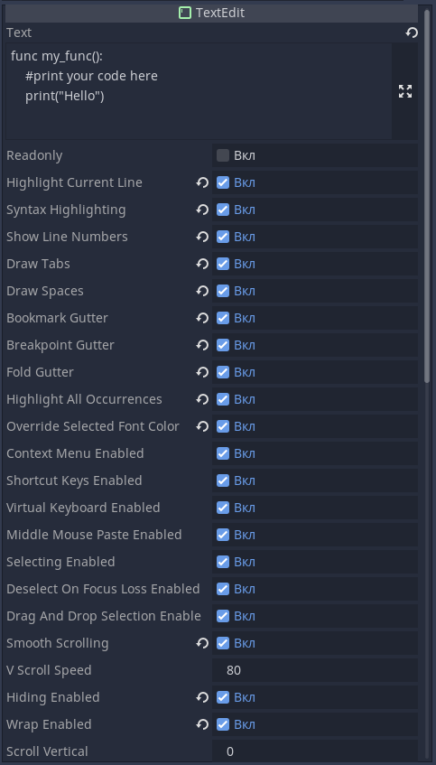

Это покажется странным, но многие языки не умеют изменяться во время выполнения. Так, например, программа, написанная на C++, при изменении исходников останется в том же виде, в котором и была запущена. Для изменения такой программы необходимо её закрыть, скомпилировать заново из исходников, и запустить уже фактически другую программу, заново созданную.
Ранее люди сталкивались с программированием внутри игр. Так, например, однажды некоторый энтузиаст превратил «Super Mario World» в совершенно другую игру – «Flappy Bird». Но делал он это на игровой приставке, у которой нет клавиатуры. Для воссоздания подобного, на самом деле, были использованы ошибки приставки – так называемые «баги». Приставка, в определённый момент, переполняла счётчик в памяти, и начинала смотреть следующий блок памяти за пределами игры, и пользователь своими действиями каким-то невероятным образом задавал адресом нужный блок памяти. Это не совсем программирование, ведь это, скорей всего некоторый взлом игры путём обмана приставки.
Насколько гибок GDScript? Ответ: настолько, что он может быть изменён/создан, интерпретирован и выполнен в момент работы игры. Когда мы запускаем игру в режиме тестирования, и начинает добавлять/убирать/изменять компоненты игры – они могут обновляться в уже запущенной игре. Точно также можно в игру встроить текстовый редактор и дать пользователю программировать игру самостоятельно. Скрипт, таким образом, будет выполнен в момент, когда игра уже запущена, и при этом это не будет являться ошибкой – это вполне себе механизм, который подразумевается, как само собой разумеющееся. Это крайне сложная, практически невыполнимая для нас операция, но благодаря Godot мы уже на начальном уровне способны с безумной лёгкостью «вытворять такие пируэты». Для этого нам понадобится «2D-сцена», «TextEdit» и «Button».
«TextEdit» растягиваем на всё пространство вьюпорта, и ставим кнопку в комфортном месте так, чтобы она не мешала просмотру текста. Так как «TextEdit» будет предназначен для кода, то мы его для этого подготовим, указав все галочки в инспекторе свойств данного узла, кроме галочки «Readonly» (параметр «Readonly» будет означать, что данное текстовое поле будет предназначено только для чтения – его нельзя будет редактировать). В свойстве «Text» можно описать любой текст, однако в случае когда мы подразумеваем исполнение кода из этого узла, то мы опишем функцию, которую мы в дальнейшем будем вызывать. Обратите внимание на наличие отступов соответствующих синтаксической структуре «GDScript».
Узел «TextEdit» изначально предлагает возможность редактирования текста в мультистрочном режиме, однако также он поддерживает изменение цветов, маркировку ключевых слов, миникарту, нумерацию строк и т.д., но слаб в качестве художественного оформления.
Бывают случаи когда в игре необходимо описать некоторый механизм проиллюстрировав его чтобы предоставить некоторый показательный пример. В таком случае существует узел «RichTextLabel». Данный узел поддерживает вставку изображений, разносортное форматирование и множество всего прочего, но не способен предложить открытое редактирование пользователем, и не подходит для кодирования, как пример, ввиду использования тегов форматирования.
Также есть узел «LineEdit» который существует для возможности написать однострочный текст (например, для указания имени игрока).
И так мы разобрались с текстовыми узлами, и теперь создадим для кнопки скрипт, и в него привяжем сигнал кнопки «on_pressed()». Теперь в данном скрипте нам необходимо из «TextEdit» забрать текст скрипта, и привязать его к некоторому узлу при помощи «set_script()». Но у нас нет узла способного принять скрипт – в самом текстовом поле не описано расширение какого-либо типа узла через «extends». Это значит, что нам необходимо создать некоторый узел, который будет существовать в качестве заглушки, но при этом будет способен исполнять наш скрипт. Для этого мы воспользуемся типом узла «Reference» - это достаточно специфичный узел, которым разработчики рекомендуют пользоваться только в том случае, если разработчик знает с чем он имеет дело, и что он делает. Мы же воспользуемся им достаточно безобидно один раз для обучения. Точно также как и этот вы можете использовать другие узлы - «Sprite», «Node2D», или что вашей душе угодно. Только стоит учитывать что при использовании определённого узла его необходимо расширить в «extends» соответствующим указанием, и создавать некоторые механизмы защиты от шаловливых ручёнок пользователей. Мы сделали самый простой механизм – дали пользователю функцию, пусть он её описывает.
И так, описываем нажатие кнопки. Для начала создаём объект скрипта:
var script = GDScript.new()
Ну а далее, в качестве исходного кода скрипта, указываем текст из узла «TextEdit» (напомню, что для обращения к узлу его достаточно перетащить из дерева сцены в код):
script.source_code = $"..".text
Загруженный в скрипт код не переопределится в данном случае самостоятельно – пока это только текст. Необходимо дать команду движку, чтобы он смог перезагрузить скрипт – таким образом он сможет обработать загруженный в него код и начать исполнять его:
script.reload()
Также «reload» способен вернуть код ошибки – это значит, что таким образом мы можем проверить правильность скрипта, и убедиться в его правильности.
Ну а теперь создадим узел-пустышку, к которому и привяжем наш скрипт:
var obj = Reference.new()
obj.set_script(script)
Далее добавим ещзё одну строчку кода - просто вернём функцию, которую мы описывали ранее, но теперь эта функция принадлежит уже узлу, так как является частью скрипта относящегося к загруженному скрипту. И теперь весь код кнопки выглядит так:
extends Button
func _on_Button_pressed():
var script = GDScript.new()
script.source_code = $"..".text
script.reload()
var obj = Reference.new()
obj.set_script(script)
return obj.my_func()
Запустите и проверьте работу нашего редактора кода. Скрипт, по нажатию кнопки, должен быть загружен, определён и исполнен в работающем приложении созданном на Godot. В качестве доказательства можете пробовать выводить разные данные в «print()» не перезагружая только-что созданную программу. Становится удивительно – люди тратят долгие годы на программирование, составляют сложные схемы из макротаблиц, пишут интерпретаторы для возможности изменить логику работы программы в момент её выполнения, а мы провернули такую фишку буквально за считанные минуты с необычайной лёгкостью, и всё благодаря Godot.
Теперь попробуйте сделать следующее: